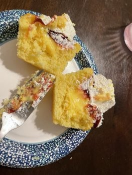
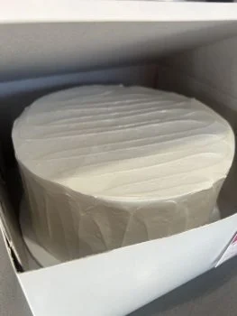
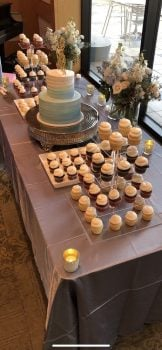
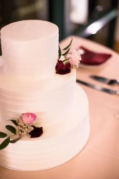
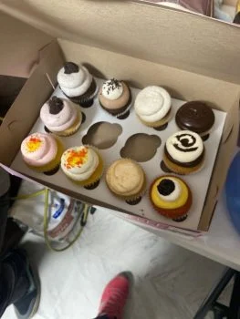
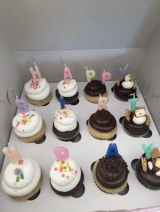
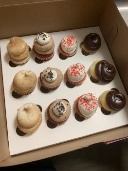
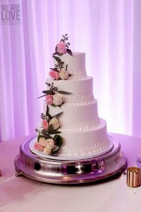

With lots of informations and locations about the best places where to choose from when it comes to our cravings , the Baking Nomad team got some extraordinary replies from our customers:

London
We have used this website trying to find some lemon cupcakes and we found the best place for it. So glad they have gluten-free options too. That’s why we first found this place. Thank you Baking Nomad for your amazing choices :)

Liverpool
I work at a veterinary hospital and one of our customers brought us this cake after he found a location using the Baking Nomad website. Let me tell you the banana vanilla cream cake was AMAZING. The cake is super moist. I am so glad I now know of this website.

Cardiff
I checked this website to a find a location close to my home to order a two tier cake and cupcakes for my wedding and I barely had time to eat cake :) Everyone loved the cake and cupcakes they were all gone. I was looking for a cake place that delivers and they delivered my cake on time. I will definitely recommend this site to my family and friends. Best cake I have ever tasted!

Edinburgh
Thanks to Baking Nomad I have found the perfect place where I ordered my wedding cake from. I am extremelly happy to recommend the website to my family

Belfast
Using the Baking Nomad informations I discovered a bakery where they have vegan choices and they don’t taste vegan at all. I also like that some of their cupcakes have fillings. They have so many flavors to chose from. Overall, the cupcakes here are pretty darn good.

Oxford
We drive two hours to come buy these fun cupcakes. So glad they have gluten-free options too. That’s why we first found this place using Baking Nomad website :)

York
My friend told me about this website where I was able to find the best cupcakes ever and so close to my house. Thanks a lot Baking Nomad for all your help!

Bristol
My wife and I ordered our 4 layer wedding cake using the Baking Nomad's map for a lovely bakery and it was the best decision we made for our wedding. We ordered White cake with raspberry filling, this combo was what we both liked, not too sweet just the right balance. The cake was delivered to our wedding venue on time and in perfect shape. Our guests from our wedding still talk about how delicious our cake was, there were no left overs from our event. We ordered our cake to have 150 serving, our headcount was 120, a lot of our guests got left overs.